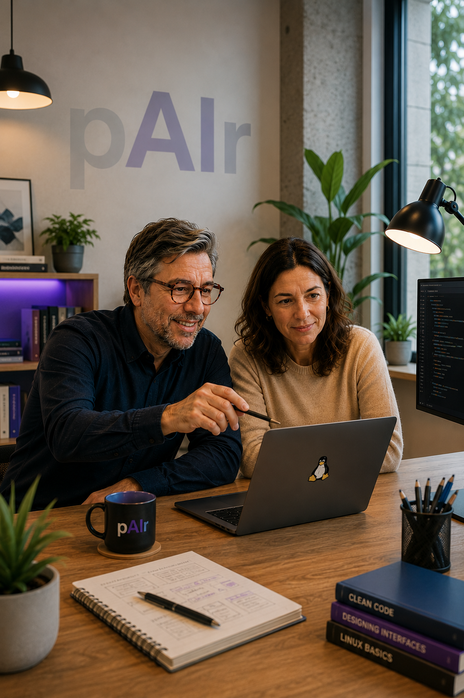

Desenvolupament tradicional
Reunió→Pressupost→Acceptació→Desenvolupament→Espera→Primera entrega→Reunió→Canvis→Entrega final
pAIr · desenvolupament en directe amb IA
En el desenvolupament tradicional expliques què necessites, esperes un pressupost, esperes el desenvolupament i revises el resultat dies o setmanes després. Amb pAIr ho fem junts, en directe: decidim què cal fer, com ho farem i ho construïm sobre la marxa amb la IA com a eina principal. Pagues pel temps de sessió, no per una promesa de projecte.
Presencialment o en línia · una hora és una hora · comencem quan et va bé.

SHOW COOKING → SHOW CODING
01 / EL CANVI
Desenvolupament tradicional
pAIr
Si cal més temps: Sessió 1 → producte funcional → Sessió 2 → producte acabat.
Comença per allò que necessites, no per la tecnologia
02 / AMB pAIr POTS…
Desenvolupament en directe. Fem la màgia ensenyant-te’n els trucs: tu ets a la cuina mentre decidim, construïm, provem i corregim amb la IA.
Convertir-la primer en un prototip que puguis provar i, si funciona, en un producte acabat.
Donar resposta a una qüestió concreta del negoci que no pot esperar i cal resoldre ara.
Automatitzar i simplificar processos de gestió o producció perquè treballar sigui més fàcil, ràpid i eficient.
Una sessió, un resultat visible
03 / QUÈ FEM
No cal arribar amb un briefing perfecte. Portes el context i la pregunta; durant la sessió prenem decisions, escrivim, dissenyem, provem i corregim plegats.
Mirem el teu negoci, detectem usos realistes de la IA i en prioritzem un que tingui sentit començar.
Definim la solució, triem les eines i construïm junts una primera versió sobre el teu cas real.
Revisem què tens, identifiquem el problema i avancem aprofitant la feina que ja has fet.
Comprovem funcionament, dades, permisos, dependències i manteniment abans de posar-ho en mans de clients.
No hi ha desenvolupament invisible entre sessions. Si queda acabat, s’ha acabat. Si necessita més temps, reservem una altra sessió i continuem exactament des d’on érem.
Pair programming, més enllà del codi
04 / PER QUÈ pAIr
Tu no ets l’alumne
pAIr programming és una manera de desenvolupar en què dues persones treballen alhora sobre el mateix projecte, comparteixen decisions i revisen el resultat mentre avancen.
Va sorgir en l’entorn del desenvolupament àgil i es va consolidar a finals dels anys noranta amb l’Extreme Programming. pAIr n’amplia la idea: tu aportes el coneixement del negoci, jo la tecnologia i la facilitació, i la IA accelera, proposa i produeix. El producte el construïm junts, en directe.
La pràctica · oberta
És una manera de treballar. Pots quedar amb algú i fer pAIr lliurement: no cal permís, plataforma ni contractar nualart.cat.
El servei · de pagament
És l’acompanyament professional de nualart.cat: facilitació, criteri tècnic i construcció compartida sobre el teu repte.
Veure com funcionaConstruir no és només fer que funcioni
05 / CRITERI TÈCNIC
No saber programar no t’ha d’impedir construir
Amb acompanyament tècnic pots aprofitar la velocitat de la IA sense haver d’assumir riscos que no pots veure. Revisem allò que la IA genera abans que hi entrin clients, dades reals o un atacant.
No hi ha una xifra rigorosa per a «totes les apps fetes per persones no programadores». La dada més pròxima és aquesta: en un estudi de 200 aplicacions vibe-coded reals i desplegades, el 90% contenia almenys una vulnerabilitat; més de tres quartes parts eren d’alta gravetat o crítiques.
Fonts i abast de les dades
de 200 apps vibe-coded desplegades contenien almenys una vulnerabilitat.
de les mostres generades en una prova de més de 100 models van fallar els tests de seguretat.
tasques d’un estudi amb usuaris van produir solucions menys segures amb l’assistent d’IA.
Una pantalla pot semblar privada mentre el servidor permet consultar o modificar dades d’una altra persona.
Claus d’API, contrasenyes o dades personals poden acabar al navegador, al repositori o en registres públics.
Formularis sense validar poden obrir la porta a injeccions, cross-site scripting o contingut maliciós.
La IA pot suggerir paquets inexistents, antics o vulnerables i convertir una instal·lació normal en una porta d’entrada.
Sense còpies, registres, actualitzacions i retorn enrere, una demostració funcional encara no és un producte mantenible.
És combinar la potència de la IA amb criteri tècnic: entendre l’arquitectura, comprovar el codi, provar els límits i assumir responsabilitats abans de publicar.
Què podem portar a la taula?
06 / RESULTATS
No cal arribar amb una solució ni saber utilitzar la IA. Cal poder explicar què vols canviar, què ja saps i per què importa.
Una web, un prototip, una automatització, una visualització o una eina interna.
Un procés lent, una feina repetitiva o un problema que consumeix temps i diners.
Una decisió difícil, una idea de negoci o una sessió d’ideació amb profunditat i contrast.
Un producte, un text, una experiència, una estratègia o una campanya abans de publicar-la.
Un tema complex, les alternatives disponibles i l’evidència que ha d’orientar la decisió.
Una tecnologia o un mètode aplicat directament a un projecte teu, no a un exercici genèric.
Del repte al resultat
07 / COM FUNCIONA
Una sessió de treball presencial o en línia. Tu veus les decisions, el codi, els errors, les proves i les correccions mentre passen.
Ens expliques el problema, presencialment o en línia, i obrim el projecte davant teu.
Durant la mateixa sessió definim què cal fer, decidim com resoldre-ho i ho construïm junts amb la IA.
Veus les decisions, el codi, els errors, les proves i les correccions sobre la marxa.
Si queda resolt, s’ha acabat. Si necessita més feina, reservem una altra sessió i reprenem exactament des d’on érem.
pAIr Sessions · servei professional
pAIr es factura per temps de sessió. Sense paquet obligatori, sense pressupost de projecte tradicional i sense esperar una entrega: veus exactament què estàs pagant.
Explica’ns el reptePer aclarir un problema i sortir-ne amb una decisió o una primera peça construïda davant teu.
Resultat possibleMapa, criteri, decisió o primera peça útil.Per construir una primera versió funcional: prototip, web, procés o eina, provant-la mentre avancem.
Resultat possibleUn resultat tangible que ja es pot provar.Per a un repte que necessita més hores seguides de decidir, construir, provar i corregir.
Resultat possibleUna versió sòlida i els passos següents.Una altra sessió quan el projecte necessita més temps. Reprenem exactament des d’on el vam deixar.
Resultat possibleEvolució iterativa, no una marató improvisada.Compartim pantalla, context i decisions allà on et sigui més còmode.
El que es produeix durant la sessió és del client. Cap treball ocult entre reunions.
Comença amb una sessió i reserva’n una altra només si el resultat ho justifica.
D’on surt?
Una proposta per fer útil la trobada entre coneixement humà, criteri tècnic i intel·ligència artificial.
nualart.cat impulsa i coordina pAIr a partir de més de vint anys connectant visualització de dades, disseny d’interfícies, recerca, codi i projectes digitals. Cada repte demana coneixements diferents: per això estudiem el cas i proposem les persones expertes més adequades per guiar la sessió, aportar criteri i ajudar a convertir la necessitat en un resultat real.
Preguntes més freqüents
Sí. pAIr és una pràctica oberta: queda amb una altra persona, trieu un projecte real i treballeu amb la IA com a eina principal. El servei de pagament és l’acompanyament professional, no el dret a fer pAIr.
Temps de treball compartit, facilitació i criteri tècnic. Una hora és una hora: veus les decisions i el resultat mentre es construeix.
És totes dues coses: l’eina principal i una intel·ligència participant que pot saber més, raonar, proposar i produir. Això no elimina la responsabilitat humana sobre els objectius, la verificació i les conseqüències.
No. L’origen és el pair programming, però la pràctica serveix per investigar, escriure, dissenyar, pensar una campanya, revisar un producte o transformar un procés de treball.
No per començar: has de conèixer el teu context o tenir una pregunta real. Però si el resultat és programari que es publicarà, algú ha d’entendre l’arquitectura, el codi, els servidors i la seguretat. La IA no substitueix aquesta responsabilitat.
Tanquem amb el que tenim i, si compensa continuar, reserves una altra sessió. El projecte continua exactament des d’on érem, sense desenvolupament invisible entremig.
pAIr Sessions · servei professional
Explica’m què vols construir, resoldre o repensar. Començarem per una sessió de treball i ho farem visible des del primer minut.